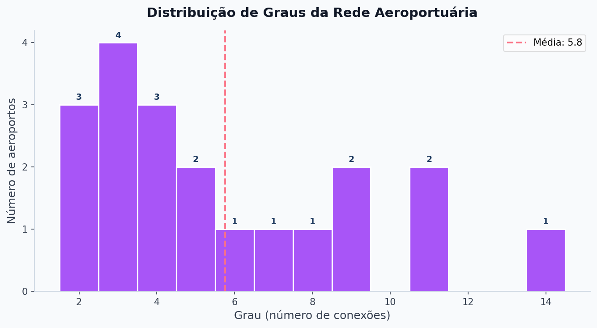
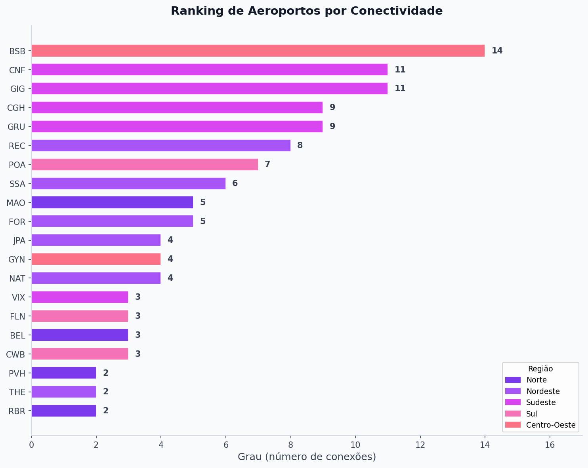
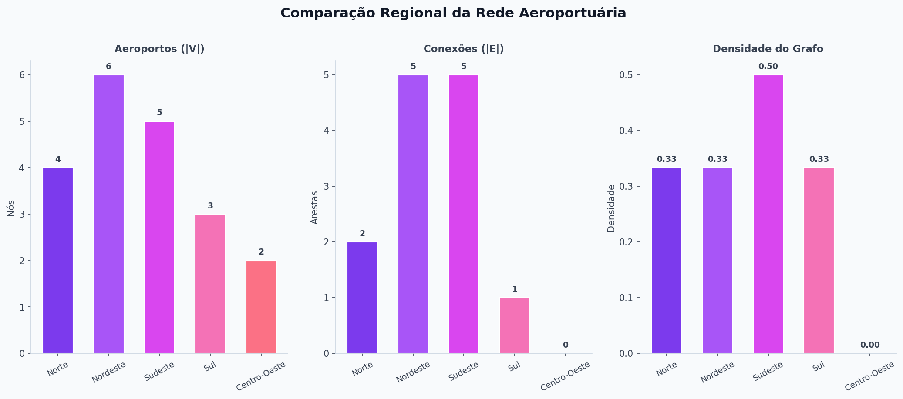
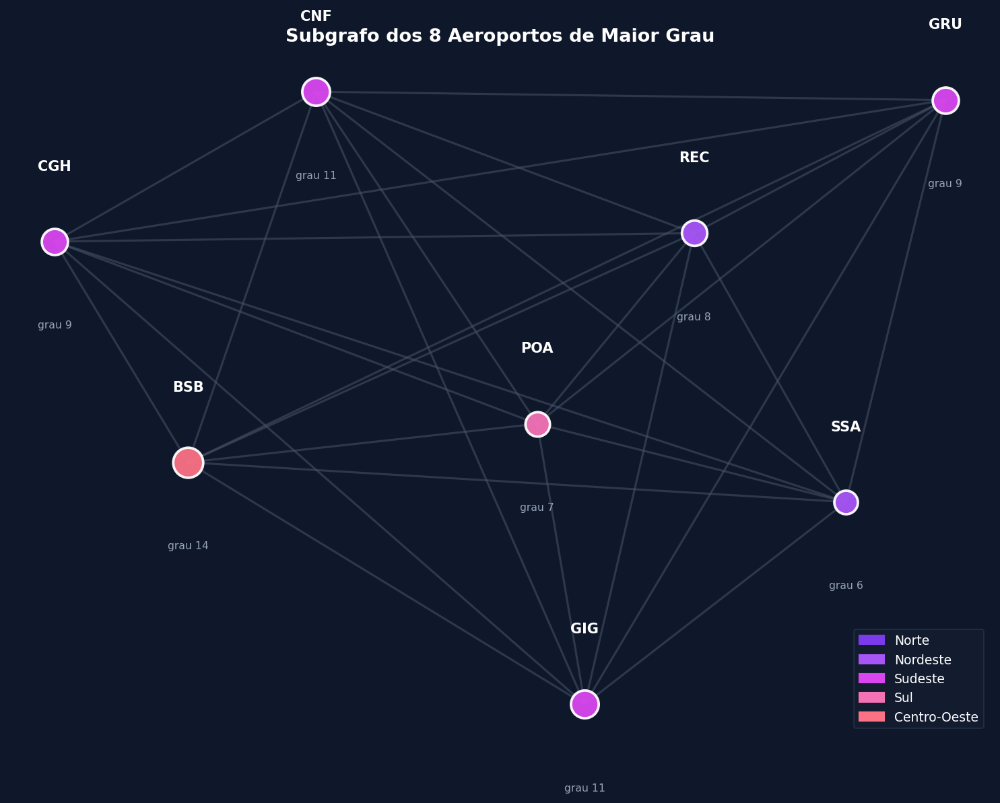
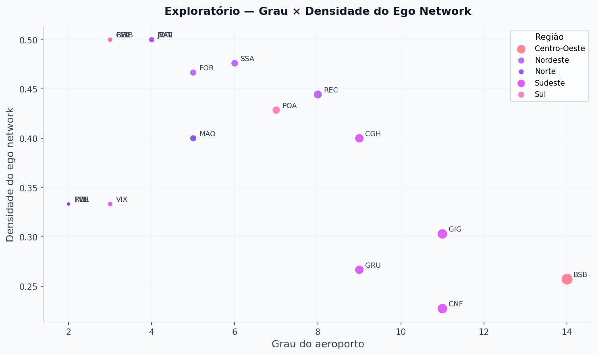
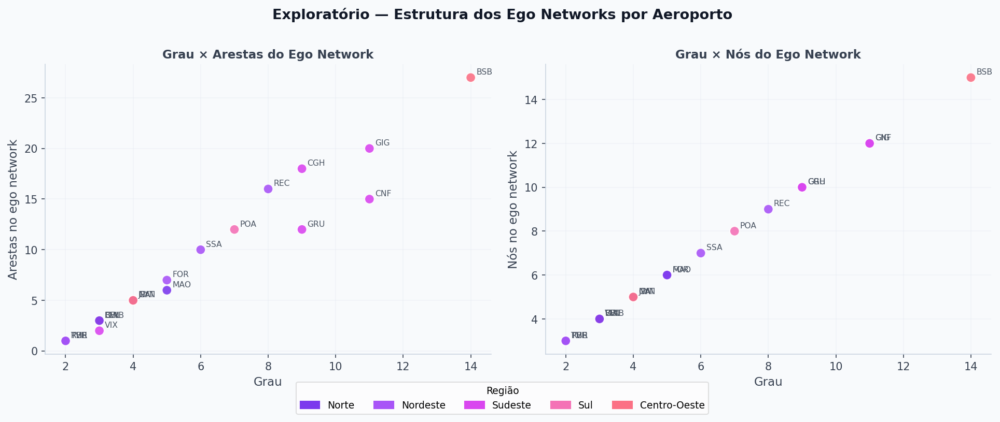
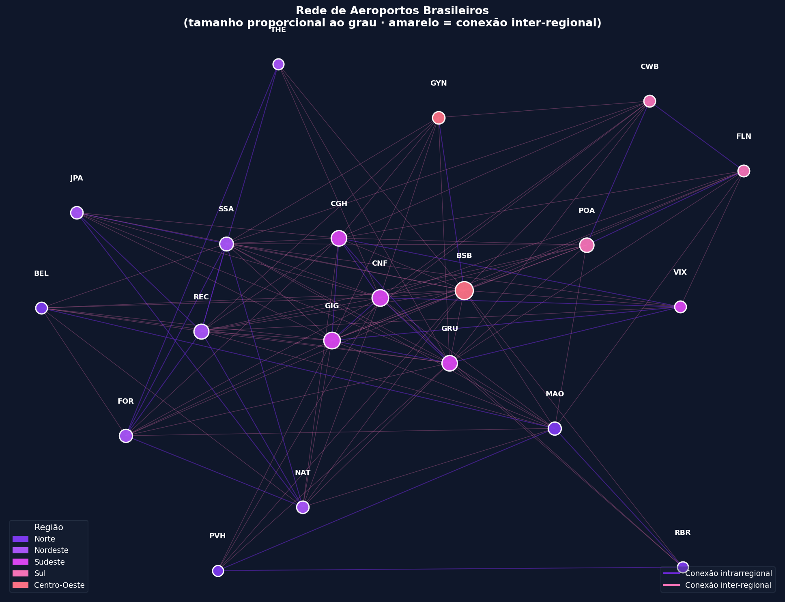
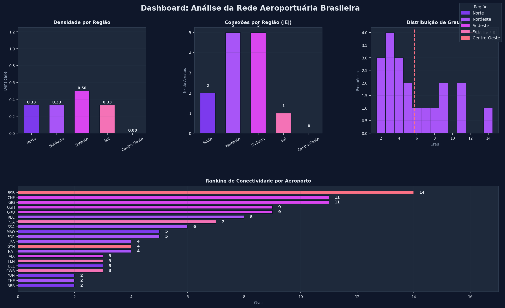

Clique em qualquer imagem para ampliar. Use ← → para navegar. Gerado com matplotlib.

Histograma dos graus dos 20 aeroportos. Evidencia a estrutura hub-and-spoke: GRU, CNF e BSB dominam com grau 19.

Barras ordenadas por grau decrescente. Permite identificar rapidamente os hubs nacionais e regionais.

Densidade por região. Sudeste, Sul e Centro-Oeste têm densidade 1,0; Norte é o menos denso (0,67).

Os 5 aeroportos de maior grau e suas interconexões. Formam um clique quase completo no núcleo da rede.

Dispersão: aeroportos com alto grau (hubs) têm menor densidade ego; aeroportos pequenos têm ego-redes completas.

Painel comparativo com grau, tamanho e densidade da ego-rede por aeroporto.

Grafo completo com 20 nós e 115 arestas. Nós coloridos por região, tamanho proporcional ao grau.

Síntese dos principais achados da Parte 1 em um único painel.

Caminhos obrigatórios REC→POA e MAO→GRU destacados sobre o grafo de aeroportos.